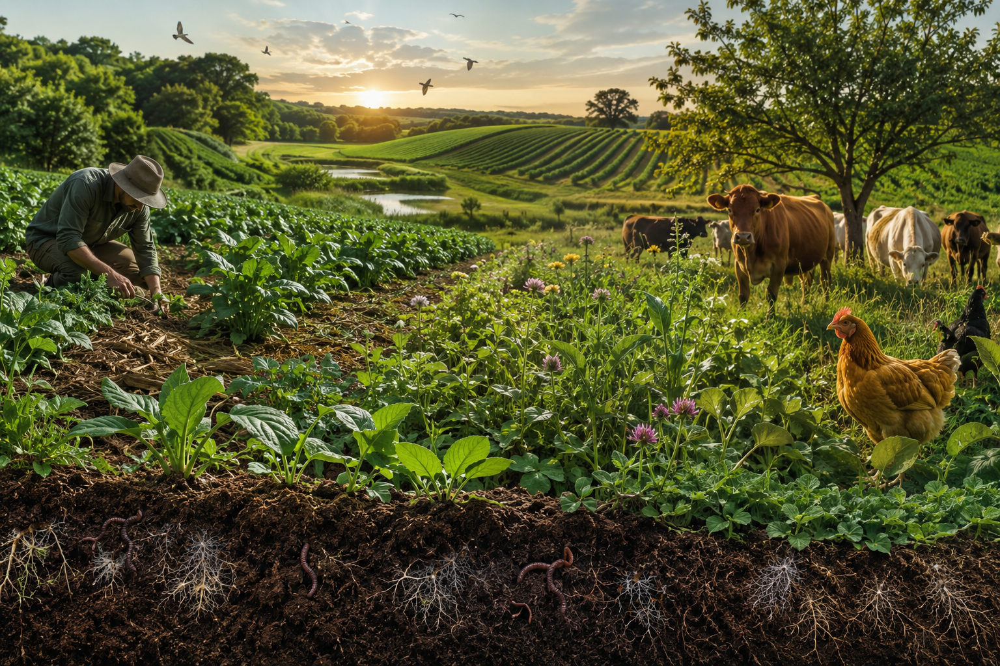
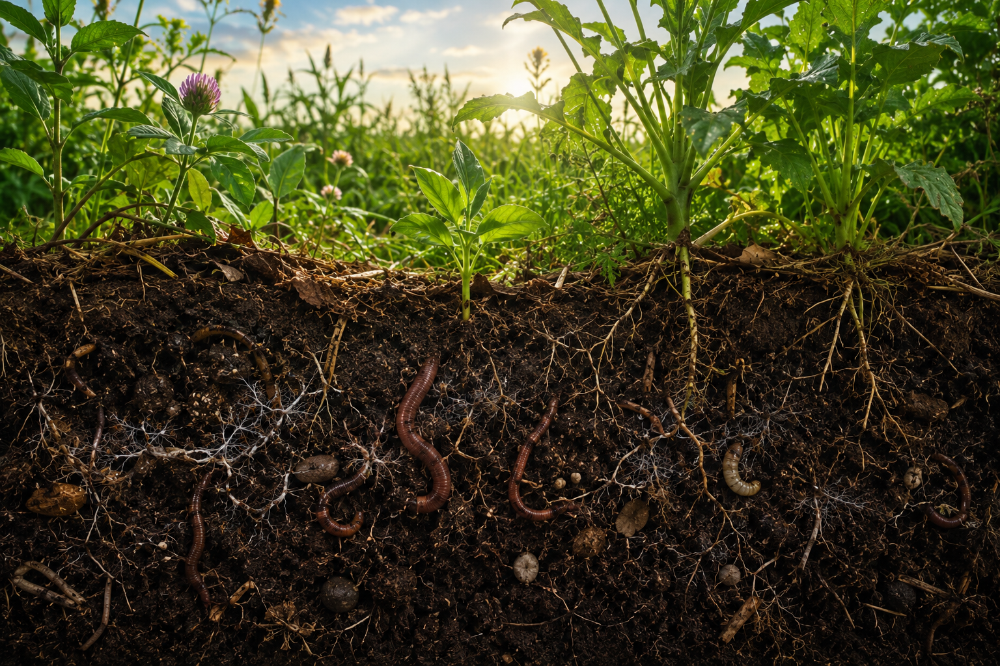
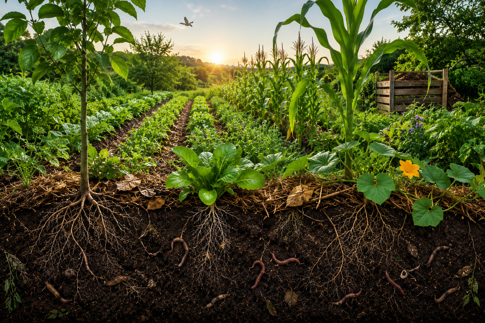

Agricultura Regenerativa: Cultivando o Futuro sem Degradar o Solo
Descubra como práticas sustentáveis podem restaurar ecossistemas, aumentar a produtividade agrícola e garantir alimentos para as futuras gerações.



Por que o solo é tão importante?
O solo fornece nutrientes, água e suporte para as plantas. Cerca de 95% dos alimentos consumidos pela humanidade dependem diretamente dele. Quando degradado, reduz a produtividade agrícola e afeta o equilíbrio ambiental.
Panorama Mundial
Principais Problemas
Simulador de Recuperação do Solo
Escolha práticas sustentáveis e veja como elas melhoram a saúde do solo.
Impactos da Agricultura Regenerativa
Casos de Sucesso
Evolução da Recuperação do Solo
Ano 1
Controle da erosão.
Ano 3
Aumento da matéria orgânica.
Ano 5
Maior fertilidade e produtividade.
Vídeo Educativo
Soluções Sustentáveis
Quiz Interativo
Teste seus conhecimentos sobre agricultura regenerativa.
Certificação
Conclua o quiz para conquistar sua certificação.
Perguntas Frequentes
Reflexão Final
Quais ações podem ser realizadas em sua comunidade para proteger e recuperar os solos?
Voltar ao Topo